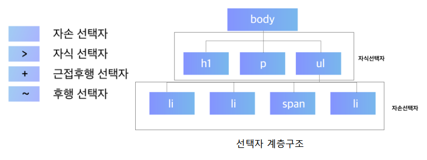
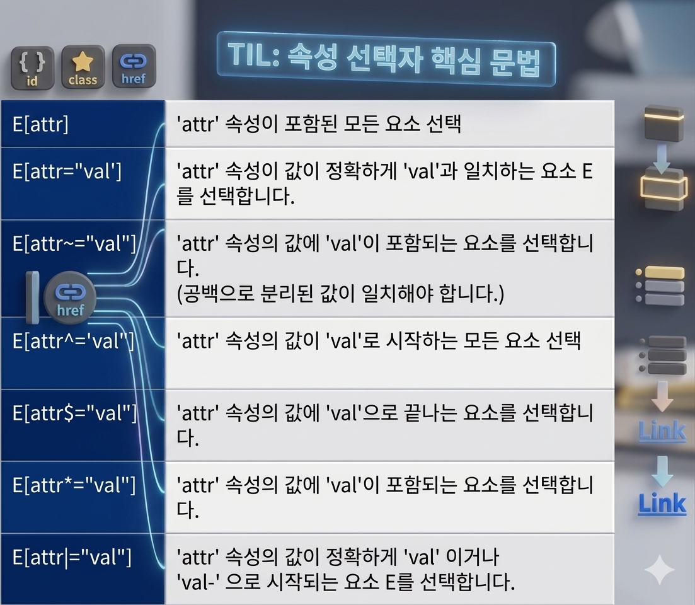
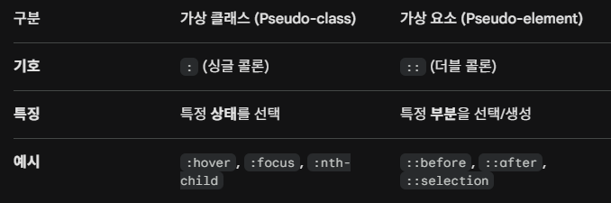

오늘의 수업 CSS, 고급 선택자 활용하기

연결선택자는 둘 이상의 선택자를 연결해서 스타일이 적용될 요소가 어느 부분인지 지정합니다. 선택자를 둘 이상 조합하므로
'조합 선택자','콤비네이션 셀럭터'라고도 합니다.
div p

여기에서 살펴볼 속성 선택자는 태그안에서 사용하는 속성값에 따라 요소를 선택하는 역할을 합니다. 속성 선택자는 속성값의 조건에 따라 특정 부분만 선택하기 쉬우므로 상황에 맞는 스타일을 지정하기도 쉽습니다.

CSS에서는 사용자가 HTML 요소와 상호 작용하거나, 요소가 특정 상태일 때에만 해당 요소에 가상의 클래스를 적용하여 요소를 선택하는 가상 클래스(Pseudo-class)는 요소의 특정 '상태'(:hover, :focus, :nth-child 등)를, 가상 요소(Pseudo-element)는 요소의 특정 '영역'(::before, ::after, ::first-line 등)을 선택합니다.
현재 매주 월요일 마다 웹프로그래밍을 배우고 있습니다.
09:00 - 18:00 (일요일 휴일)